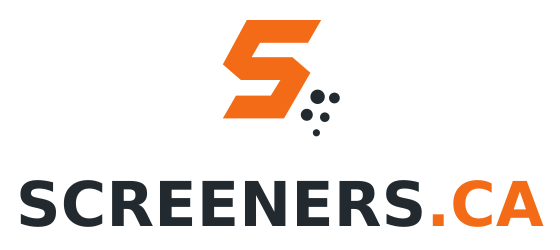
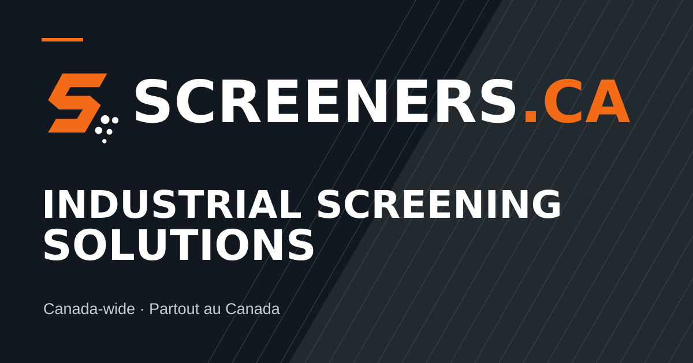

SCREENERS.CA identity review
Proposed refinement of the selected Modern Industrial #2 direction. Review the angular S, screening dots and integrated SCREENERS.CA wordmark. Final visual signoff is pending.



Proposed refinement of the selected Modern Industrial #2 direction. Review the angular S, screening dots and integrated SCREENERS.CA wordmark. Final visual signoff is pending.


